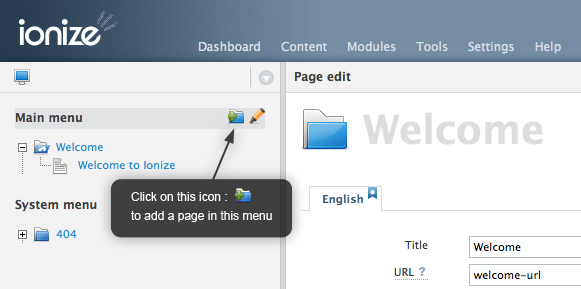
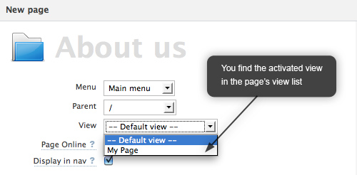

QuickStart : Ionize in 4 steps
Just after installing Ionize, the first question is mainly : "And now ?"
4 first steps will help you to start your website :
- Creating a theme,
- Creating a page view,
- Activate the view,
- Link this page to you content
1. Creating your theme
All themes are located in the folder: /themes/.
To create your own theme :
- Copy or rename the folder default. No spaces or special chars are allowed in the folder name.
- Select this theme in the Settings->Themes panel of Ionize and save.
- Start editing the files in the views folder.
Important: The 3 folders in red (config, helpers, views) must be present in your theme folder.
2. Creating a page view
You're now able to start to create your own views.
In the folder /themes/my_theme/views/, create the file called "my_page.php" and add the following code inside :
// This will display the page title <ion:title tag="h2" /> // Here, we will loops through the articles linked to the page <ion:articles> // Displays the article title <h3><ion:title /></h3> // Displays the article content <ion:content /> </ion:articles>
3. Activate your view in Ionize
A view can be used in 3 ways :
- For pages
- For articles
- To be used as partial in another view.
Page and articles views must be activated so Ionize can add them to the "view" list in the page and article panels.
In Ionize, go to : Settings > Themes...

This panel shows the views PHP files.
For each view, you can enter a logical name, which will be in the view list of the page edition panel, and set the type ("article" or "page").
4. Link a view to your content
First of all create a page in Ionize :

Then select your view in the view list :

You're done!
Once your views are activated, they will be available for people who will edit the content.
And now ?
Add data to your page view : Have a look to the tag reference